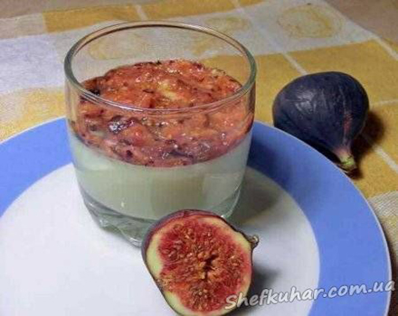

Панна Котта з медом і інжиром

Інгредієнти: Склад (на 4 порції): 400 мл вершків (жирністю 20% і більше) 10 г желатину 4 ст. л. цукру 1-2 ст. л. меду 4 плоду інжиру
Кулінарний рецепт панна котти з медом і інжиром
Желатин замочити у вершках на 10 хвилин. Після цього додати в вершки цукор і нагрівати їх на повільному вогні до повного розчинення желатину і цукру. Не забувайте постійно помішувати! Не нагрівайте вершки більше, ніж до 60 °С
Увага! Обов'язково прочитайте інструкцію на упаковці желатину і варіюйте спосіб приготування желе згідно з приписами виробника!
У гарячих вершках розмішати мед до повного розчинення. Розлити масу по порційних формам і поставити в холодильник до повного застигання.
Коли панна котта застигне, подрібнити у блендері плоди інжиру і викласти пюре поверх вершків. Трохи охолодити десерт і подавати!
Смачного!